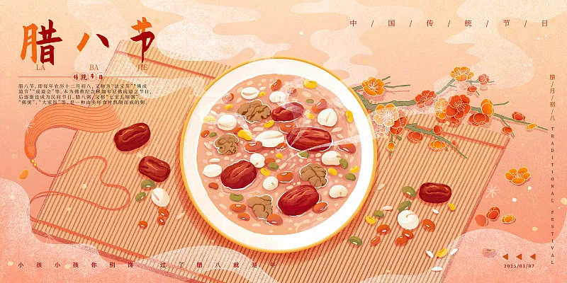

腊八节
———五谷丰登庆有余
历史溯源
腊八节可追溯至先秦"腊祭"，《礼记》记载"岁十二月，合聚万物而索飨之"。佛教传入后与佛成道日融合，敦煌文书P.3107号记载了寺院"腊八施粥"的盛况。北宋《梦粱录》详细描述了临安"七宝五味粥"的配方。清代宫廷腊八粥需用24种食材，象征二十四节气，现存故宫的鎏金粥罐证实了其规制之隆。
民俗图鉴：
熬粥习俗：
西北京雍和宫保留古法，铜锅熬粥需经"三沸三搅"工序；
泡制腊八蒜：
华北地区选用紫皮蒜，米醋需浸没至瓶身"腊"字位置；
祭祀活动：
陕西韩城"社火"表演包含酬谢谷神的传统傩舞；
冰上祈福：
哈尔滨冰雪大世界建造"腊八冰塔"，再现《燕京岁时记》记载的"食冰祛病"习俗。
文化价值
节日融合农耕文明与佛教文化，山西应县木塔发现的辽代《熬粥图》壁画，生动描绘了僧俗共庆的场景。韩国"腊八粥"保留红豆驱鬼的古俗，日本寺院则延续了施粥传统。现代营养学证实，腊八粥的食材搭配符合冬季养生需求。
创新发展
老字号"同兴公"推出速冻腊八粥，采用航天食品冻干技术；故宫文创开发"五谷丰登"盲盒，内含考古发掘复原的历代粮仓模型。2024年农业农村部启动"腊八农耕遗产"保护计划，在山西晋城建立传统作物基因库。
